4410D10 FRONT SUSPENSION FRAME - R+R
- Path
- Procedures > 44 SUSPENSION AND WHEELS > 4410 FRONT SUSPENSION > 4410D FRAME AND CROSSMEMBER > 4410D10 FRONT SUSPENSION FRAME - R+R
- Kind
- repair procedure (removal / refitting; the operation number is the code)
- Applies to
- all engines; all production periods
- Interactive page
- https://sloeber94.github.io/elrnDB-fCrm/en/#/194000547
Applies to: engines: 1.8, 1.9 JTD 8v, 1.9 JTD 16v; all production periods
 Removing
Removing
 Refitting
Refitting- Position the vehicle on a lift.
- Make sure that the ignition key is in the OFF position, then disconnect the battery terminal (-).
Description | Connector | |
|---|---|---|
- | Battery |
Op. 4450B12 FRONT WHEELS (TWO) - R+R
Op. 7055B66 ENGINE COMPARTMENT DUST COVER IN RIGHT FRONT WHEEL ARCH - R.R.
Op. 7055B91 RIGHT FRONT WHEEL ARCH LINER - R.R.
Op. 7055B90 LEFT FRONT WHEEL ARCH LINER - R.R.
Op. 1080B95 REAR LAMBDA SENSOR TO CATALYTIC CONVERTER - R.R
Op. 1076B18 RIGID SECTION OF EXHAUST PIPE BETWEEN CATALYTIC CONVERTER AND SILENCER - R + R
Op. 7055A43 CENTRE FRONT GRILLE - R.R.
1. Undo the fixing bolt (1a) and disconnect the steering column (1b) from the steering box.
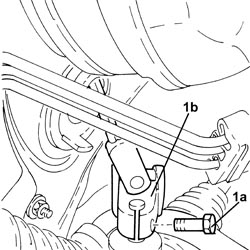
Applies to: engines: 1.8, 1.9 JTD 8v, 1.9 JTD 16v; all production periods
- Secure the engine cooling radiator to the headlamp beam.
1. Unscrew the nuts (1a) and disconnect the steering links (1b) from the front steering knuckles using the tool (1c).
Tool | Description | Function | Validity |
|---|---|---|---|
1871000700 | Extractor | Extracting steering rod from steering knuckle |
2. Undo the nuts (2a) and disconnect the front anti-roll bar rods (2b) from the anti-roll bar.
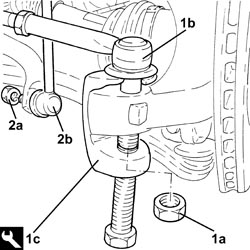
Applies to: engines: 1.8, 1.9 JTD 8v, 1.9 JTD 16v; all production periods
1. Undo the bolts (1a) and disconnect the front suspension lower track control arms (1b) from the steering knuckles.
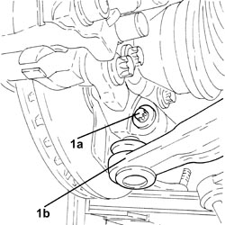
Applies to: engines: 1.8, 1.9 JTD 8v, 1.9 JTD 16v; all production periods
1. Undo the bolt securing the lower gearbox reaction rod, on the side of the mounting bracket on the gearbox.
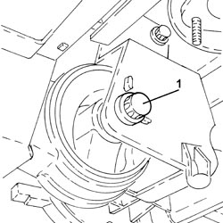
Applies to: engines: 1.8, 1.9 JTD 8v, 1.9 JTD 16v; all production periods
1. Unscrew the bolt securing the left engine support flexible mounting, front suspension frame side.
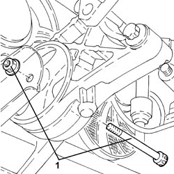
Applies to: engines: 1.8, 1.9 JTD 8v, 1.9 JTD 16v; all production periods
1. Disconnect the electrical connections from the power steering pump.
Description | Connector | |
|---|---|---|
1 | Electric steering control unit |
2. Release the power steering electrical wiring (2a) from the bands (2b) securing it to the front suspension frame.
3. Undo the bolts (3a) and remove the engine cooling radiator supports (3b).
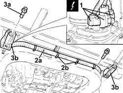
Applies to: engines: 1.8, 1.9 JTD 8v, 1.9 JTD 16v; all production periods
1. Position a hydraulic lift (1a) using tools (1b) and (1c) to support the front suspension frame.
Tool | Description | Function | Validity |
|---|---|---|---|
1870835001 | Hydraulic lift | Supporting front suspension frame Rear suspension crossmember support |
Tool | Description | Function | Validity |
|---|---|---|---|
2000001700 | Support | Front suspension frame/rear suspension crossmember support |
Tool | Description | Function | Validity |
|---|---|---|---|
2000001800 | Support | Supporting front suspension frame |
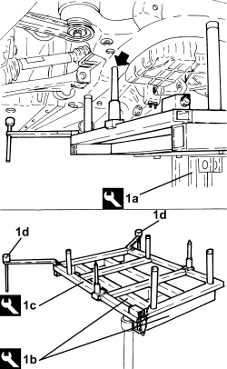
Applies to: engines: 1.8, 1.9 JTD 8v, 1.9 JTD 16v; all production periods
- If the above hydraulic lift is not available, use a general hydraulic lift plus the adaptor shown in the drawing, which must be made up by the workshop to allow the use of the above frames
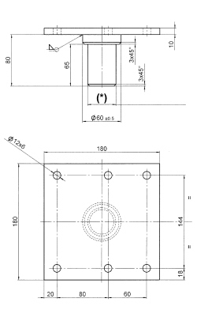
Applies to: engines: 1.8, 1.9 JTD 8v, 1.9 JTD 16v; all production periods
(*): Ensure the shank diameter of the adaptor fits the hydraulic lift used.
Applies to: engines: 1.8, 1.9 JTD 8v, 1.9 JTD 16v; all production periods
1. Undo the bolts (1a) and remove the underbody reinforcements (1b).
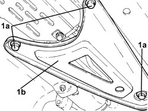
Applies to: engines: 1.8, 1.9 JTD 8v, 1.9 JTD 16v; all production periods
1. Undo the bolts fixing the front suspension frame to the bodyshell.
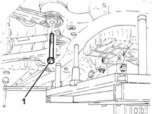
Applies to: engines: 1.8, 1.9 JTD 8v, 1.9 JTD 16v; all production periods
- Lower the hydraulic jack and remove the front suspension frame assembly.
Applies to: engines: 1.8, 1.9 JTD 8v, 1.9 JTD 16v; all production periods
1. Working at the bench, unscrew the bolts (1a) and remove the anti-roll bar (1b) from the front suspension frame.
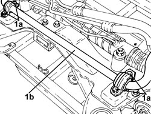
Applies to: engines: 1.8, 1.9 JTD 8v, 1.9 JTD 16v; all production periods
1. Undo the nuts fixing the power steering box to the front suspension frame.
2. Remove the power steering box (2a) complete with pipes (2b) and power steering pump from the front suspension frame.
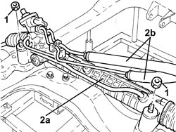
Applies to: engines: 1.8, 1.9 JTD 8v, 1.9 JTD 16v; all production periods
1. Undo the bolts (1a) and remove the gearbox lower reaction rod (1b).
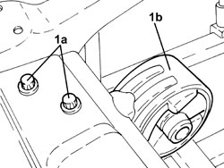
Applies to: engines: 1.8, 1.9 JTD 8v, 1.9 JTD 16v; all production periods
1. Undo the bolts (1a) and remove the front suspension track control arms (1b).
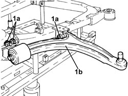
Applies to: engines: 1.8, 1.9 JTD 8v, 1.9 JTD 16v; all production periods
Refitting
Removing1. Refit the front suspension track control arms (1a) in their seats on the front suspension frame and secure by fitting the bolts (1b) and (1c) without tightening them.
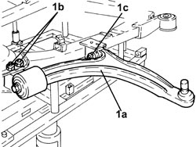
Applies to: engines: 1.8, 1.9 JTD 8v, 1.9 JTD 16v; all production periods
1. Place the gearbox lower reaction rod (1b) in its housing and secure it tightening the bolts (1b) to the recommended torque.
Component | Fastening | dia | Value (daNm) | Validity |
|---|---|---|---|---|
Lower reaction rod for gearbox | Bolt | M10 | (front suspension frame side) 5.5 ÷ 6.5 |
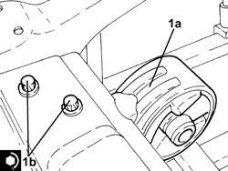
Applies to: engines: 1.8, 1.9 JTD 8v, 1.9 JTD 16v; all production periods
1. Refit the power steering box (1a) with pipes (1b) and power steering pump in its seat on the front suspension frame.
2. Tighten the new nuts fixing the power steering box to the front suspension frame to the specified torque.
Component | Fastening | dia | Value (daNm) | Validity |
|---|---|---|---|---|
Power assisted steering box | Nut (to replace) | M12 | (chassis side) 4.1 - 5.0 + 45° |
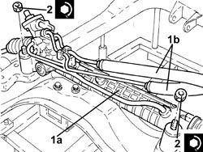
Applies to: engines: 1.8, 1.9 JTD 8v, 1.9 JTD 16v; all production periods
1. Place the anti-roll bar (1a) in its housing in the front suspension frame and secure it by tightening the bolts (1b) to the recommended torque.
Component | Fastening | dia | Value (daNm) | Validity |
|---|---|---|---|---|
Front suspension anti-roll bar | Bolt | M8 | (chassis side) 1.8 - 2.2 |
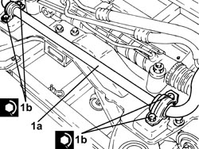
Applies to: engines: 1.8, 1.9 JTD 8v, 1.9 JTD 16v; all production periods
1. Refit the front suspension frame assembly using the support tools and the hydraulic lift.
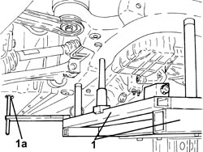
Applies to: engines: 1.8, 1.9 JTD 8v, 1.9 JTD 16v; all production periods
1. Tighten the new bolts fixing the front suspension frame to the bodyshell to the recommended torque.
Component | Fastening | dia | Value (daNm) | Validity |
|---|---|---|---|---|
Front suspension frame | Front-rear bolts (to replace) | M12 | (bodyshell side) 9.0 - 11.0 + 90° |
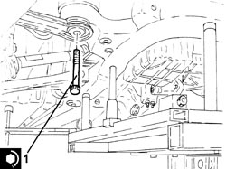
Applies to: engines: 1.8, 1.9 JTD 8v, 1.9 JTD 16v; all production periods
1. Place the underbody reinformcements (1a) in their housing and secure them tightening the new bolts (1b) and (1c) to the recommended torque.
Component | Fastening | dia | Value (daNm) | Validity |
|---|---|---|---|---|
Underbody reinforcements | Inner bolt (to replace) | M12 | (bodyshell side) 8.1 - 9.9 + 45° |
Component | Fastening | dia | Value (daNm) | Validity |
|---|---|---|---|---|
Underbody reinforcements | Outer bolt (to replace) | M10 | (bodyshell side) 5.0 - 6.1 + 45° |
Component | Fastening | dia | Value (daNm) | Validity |
|---|---|---|---|---|
Underbody reinforcements | Bolt (to be replaced) | M12 | (front suspension frame side) 9.0 - 11.0 + 90° |
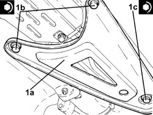
Applies to: engines: 1.8, 1.9 JTD 8v, 1.9 JTD 16v; all production periods
- Remove the tools and the hydraulic jack used to support the front suspension frame.
Tool | Description | Function | Validity |
|---|---|---|---|
1870835001 | Hydraulic lift | Supporting front suspension frame Rear suspension crossmember support |
Tool | Description | Function | Validity |
|---|---|---|---|
2000001700 | Support | Front suspension frame/rear suspension crossmember support |
Tool | Description | Function | Validity |
|---|---|---|---|
2000001800 | Support | Supporting front suspension frame |
Applies to: engines: 1.8, 1.9 JTD 8v, 1.9 JTD 16v; all production periods
1. Position the engine cooling radiator supports (1a) in their housing and secure them tightening the bolts (1b) to the recommended torque.
Component | Fastening | dia | Value (daNm) | Validity |
|---|---|---|---|---|
Engine cooling radiator supports | Bolt | - | (front suspension frame side) 1.5 |
2. Secure the power steering pump electrical wiring (2a) to the front suspension frame using the bands (2b).
3. Connect the electrical connections to the power steering pump.
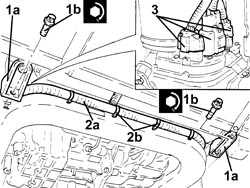
Applies to: engines: 1.8, 1.9 JTD 8v, 1.9 JTD 16v; all production periods
1. Tighten the bolt securing the left engine support flexible mounting, front suspension frame side, to the specified torque.
Component | Fastening | dia | Value (daNm) | Validity |
|---|---|---|---|---|
Flexible mounting for left side engine support | Bolt | M12 | (front suspension frame side) 7.5 ÷ 8.5 |
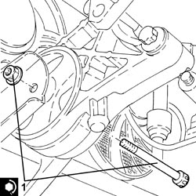
Applies to: engines: 1.8, 1.9 JTD 8v, 1.9 JTD 16v; all production periods
1. Undo the bolt securing the lower gearbox reaction rod, on the side of the mounting bracket on the gearbox, to the specified torque.
Component | Fastening | dia | Value (daNm) | Validity |
|---|---|---|---|---|
Lower reaction rod for gearbox | Bolt | M12 | (bracket side on gearbox) 7.5 - 8.5 |
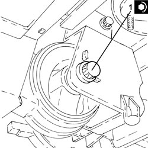
Applies to: engines: 1.8, 1.9 JTD 8v, 1.9 JTD 16v; all production periods
1. Connect the front suspension lower track control arms (1a) to the front steering knuckles and secure them tightening the new bolts (1b) to the recommended torque.
Component | Fastening | dia | Value (daNm) | Validity |
|---|---|---|---|---|
Front suspension lower track control arm | Bolt (to be replaced) | M10 | (steering knuckle side) 2.7 - 3.3 + 60° |
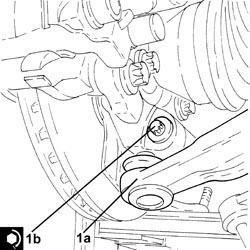
Applies to: engines: 1.8, 1.9 JTD 8v, 1.9 JTD 16v; all production periods
1. Connect front anti-roll bar links (1a) to the anti-roll bar and tighten the nuts (1b) to the specified torque.
Component | Fastening | dia | Value (daNm) | Validity |
|---|---|---|---|---|
Front suspension anti-roll bar joint | Nut | M12 | (anti-roll bar side) 6.0 - 7.0 |
2. Connect the steering links (2a) to the steering knuckles and tighten the nuts (2b) to the specified torque.
Component | Fastening | dia | Value (daNm) | Validity |
|---|---|---|---|---|
Steering rods | Nut | M12 | (steering knuckle side) 3.0 - 4.0 |
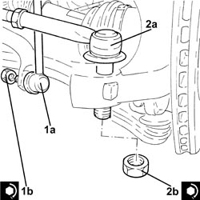
Applies to: engines: 1.8, 1.9 JTD 8v, 1.9 JTD 16v; all production periods
1. Connect the steering column (1a) to the power steering box pinion and secure it by tightening a new bolt (1b) to the specified torque.
Component | Fastening | dia | Value (daNm) | Validity |
|---|---|---|---|---|
Steering column | Bolt (to be replaced) | M8 | (power assisted steering box side) 2.3 - 2.8 |
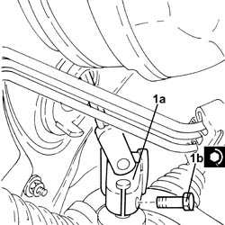
Applies to: engines: 1.8, 1.9 JTD 8v, 1.9 JTD 16v; all production periods
Op. 7055A43 CENTRE FRONT GRILLE - R.R.
Op. 1076B18 RIGID SECTION OF EXHAUST PIPE BETWEEN CATALYTIC CONVERTER AND SILENCER - R + R
Op. 1080B95 REAR LAMBDA SENSOR TO CATALYTIC CONVERTER - R.R
Op. 7055B90 LEFT FRONT WHEEL ARCH LINER - R.R.
Op. 7055B91 RIGHT FRONT WHEEL ARCH LINER - R.R.
Op. 7055B66 ENGINE COMPARTMENT DUST COVER IN RIGHT FRONT WHEEL ARCH - R.R.
Op. 4450B12 FRONT WHEELS (TWO) - R+R
- Place the front suspension in design geometry conditions.
Op. 4450A10 FRONT WHEEL GEOMETRY - CHECK USING OPTICAL EQUIPMENT - INCLUDES ADJUSTMENT IF NECESSARY
- Tighten the new bolts fixing the lower track control arm to the front suspension frame to the specified torque.
Component | Fastening | dia | Value (daNm) | Validity |
|---|---|---|---|---|
Front suspension lower track control arm | Bolt (to be replaced) | M12 | (chassis side) 8.1 - 9.9 + 75° |
- Connect the negative battery terminal.
- Remove the vehicle from the lift.
Topics linked from this page (10)
- 1076B18 RIGID SECTION OF EXHAUST PIPE BETWEEN CATALYTIC CONVERTER AND SILENCER - R + R
- 1080B95 REAR LAMBDA SENSOR TO CATALYTIC CONVERTER - R.R
- 4450A10 FRONT WHEEL GEOMETRY - CHECK USING OPTICAL EQUIPMENT - INCLUDES ADJUSTMENT IF NECESSARY
- 4450B12 FRONT WHEELS (TWO) - R+R
- 7055A43 CENTRE FRONT GRILLE - R.R.
- 7055B66 ENGINE COMPARTMENT DUST COVER IN RIGHT FRONT WHEEL ARCH - R.R.
- 7055B90 LEFT FRONT WHEEL ARCH LINER - R.R.
- 7055B91 RIGHT FRONT WHEEL ARCH LINER - R.R.
- A001 BATTERY
- M086 CONTROL UNIT
Topics that link to this page (12)
- 1004B10 POWER UNIT WITH MANUAL GEARBOX - R.R
- 1004B14 POWER UNIT WITH AUTOMATIC TRANSMISSION R + R
- 1020A20 CRANKCASE OIL SUMP - R.R CLEAN SURFACES FOR SEALANT APPLICATION
- 1020D26 FLYWHEEL SIDE OIL SEAL COVER - R.R AND REPLACE GASKETS
- 1020D38 FLYWHEEL SIDE OIL SEAL - REPLACE
- 1024B10 ENGINE FLYWHEEL - R + R FOR VERSIONS WITH MANUAL GEARBOX
- 1084A40 ENGINE OIL LEVEL SENSOR - R + R
- 1084B26 ENGINE OIL INTAKE DUCT - R.R
- 1810A20 CLUTCH - R + R
- 1820B30 CLUTCH HYDRAULIC ACTUATOR - R.R.
- 2110A10 MANUAL GEARBOX AND DIFFERENTIAL - R + R
- 4410C10 FRONT SUSPENSION ANTI-ROLL BAR - R+R - CHECK WHEEL GEOMETRY SEPARATELY